The team
Engineers, virologists, pharmaceutical scientists and data scientists working on one problem from different angles.
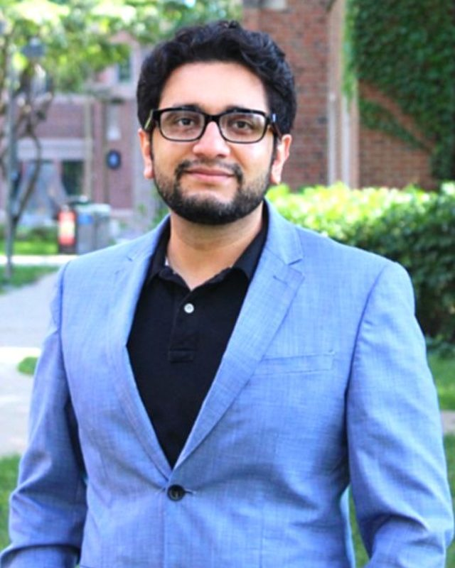
Tejabhiram Yadavalli, PhD
Assistant Professor, Department of Ophthalmology and Visual Sciences, University of Illinois Chicago
Teja started as an engineer. He earned a B.Tech in Biotechnology and an M.S. in Nanoscience and Nanotechnology at SRM University, then a PhD at SRM with Dr. Ramasamy Chennakesavulu, designing magnetic nanomaterials for drug delivery and hyperthermia.
From 2016 to 2022 he was a postdoctoral fellow in ocular virology with Dr. Deepak Shukla at UIC, where he developed the DECON sustained-release platform and helped identify host-directed antivirals for herpes simplex virus, including BX795 and phenylbutyrate. He started the OD3 Lab in 2023 with an NEI R01.
He has co-authored more than 80 publications, holds two patent applications in ocular drug delivery, and serves as a reviewer for NIH study sections.
- Current Assistant Professor, Ophthalmology and Visual Sciences, UIC
- 2016 to 2022 Postdoctoral Fellow, Ocular Virology, UIC (mentor Dr. Deepak Shukla)
- 2016 PhD, SRM University, Chennai
- 2012 M.S. Nanoscience and Nanotechnology, SRM University
- 2008 B.Tech Biotechnology, SRM University
Lab members
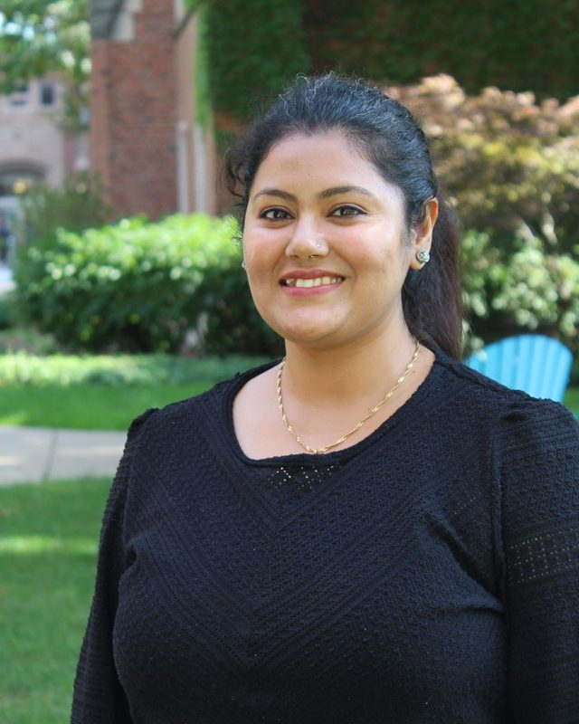
Ankita Sarkar, PhD
PhD, IIT Mandi. Leads DECON corticosteroid delivery and works on O-GPT microneedles and nanoparticle drug delivery.
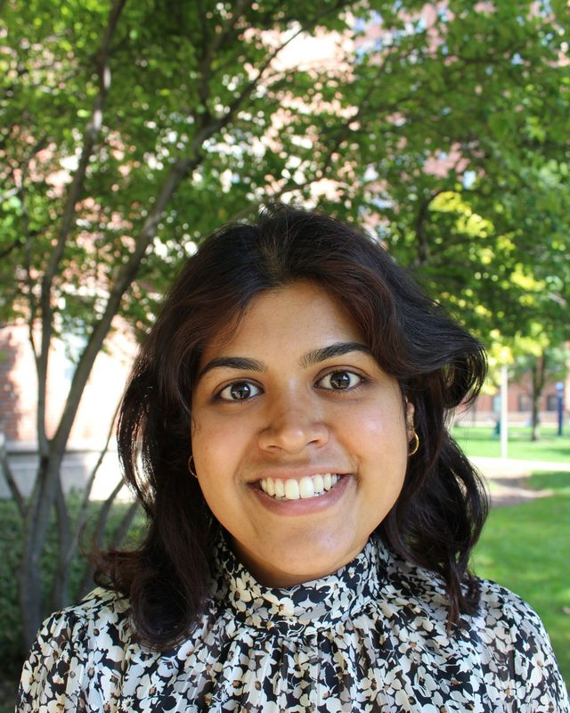
Maherah Shaik
Studies the viral and host signals that prime monocyte responses in HSV-1 stromal keratitis.
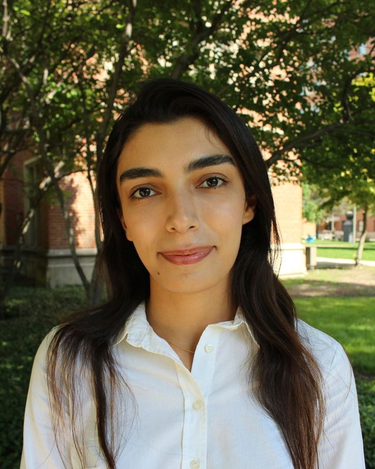
Sana Khosravi
B.Sc. Chemical Engineering, University of Tehran. Builds dual-drug PLGA thin films for post-surgical ocular care.
Maria Taher Plumber
Builds machine learning classifiers that identify ocular pathogens from host transcriptomic signatures.
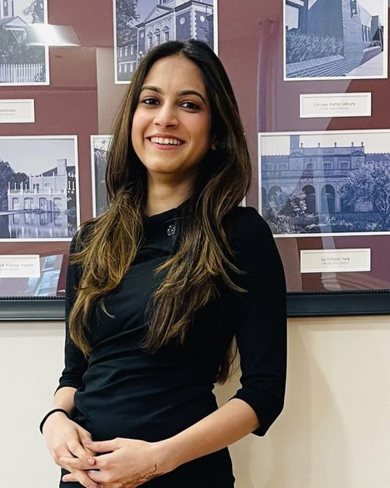
Bansari Patel, MD
A physician by training, Bansari brings a clinical perspective to the lab's ocular HSV-1 infection studies.
Sherly Fadel Makar
Works on dissolving corneal microneedles.
Alumni
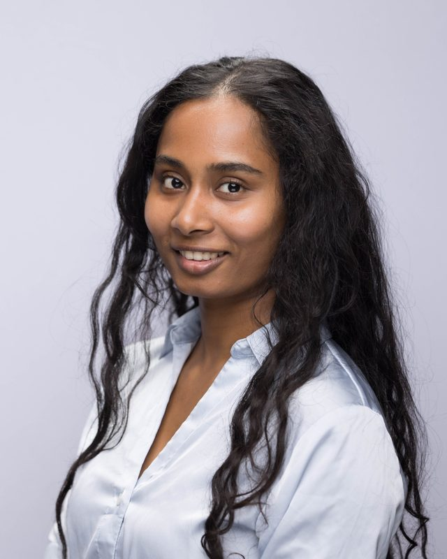
Neeraja Revi, PhD
Now a postdoctoral fellow at Northwestern University.
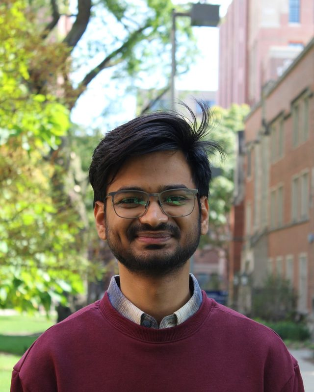
Ratnesh Kumar
Now at Google.
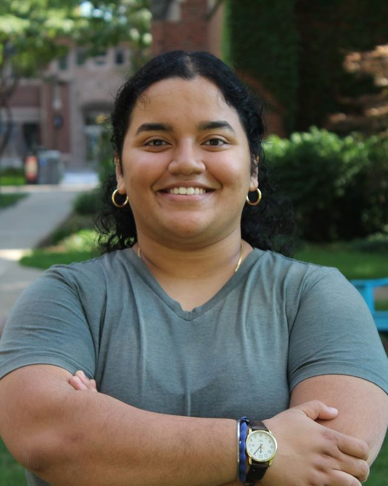
Mannat Singh
Preparing for medical school, research in the Shukla Lab.
| Name | Role in OD3 | Years | Next |
|---|---|---|---|
| Neeraja Revi, PhD | Postdoctoral Fellow | 2024 to 2025 | Postdoc, Northwestern University |
| Ratnesh Kumar | MS Graduate Research Assistant | 2025 to 2026 | |
| Mannat Singh | Undergraduate Researcher | 2024 to 2025 | Pre-medical, Shukla Lab |
| Tejas, Sahasra, Adi, Jeamyung, Shefali | High school summer volunteers | 2024 |
Outside the bench
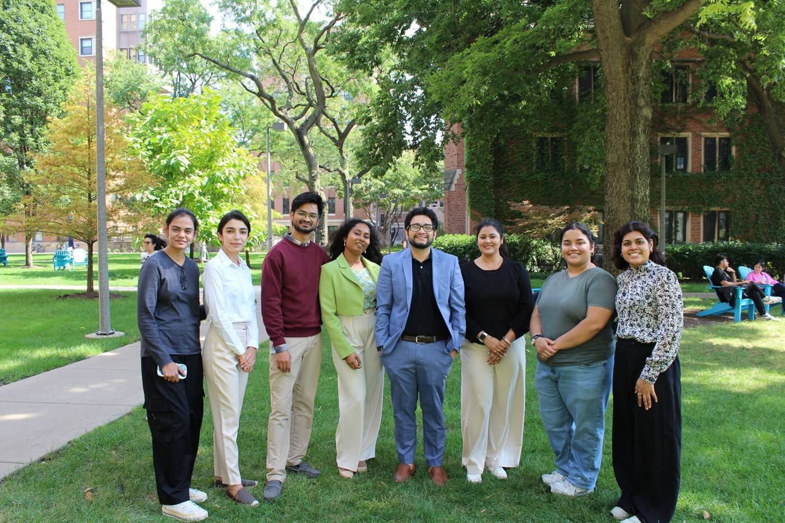
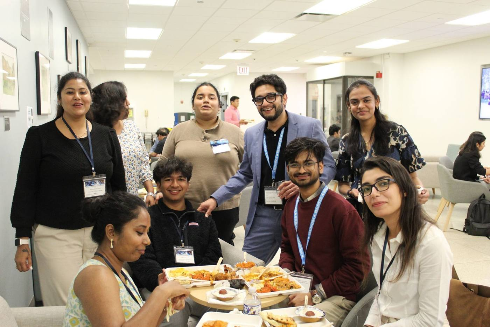
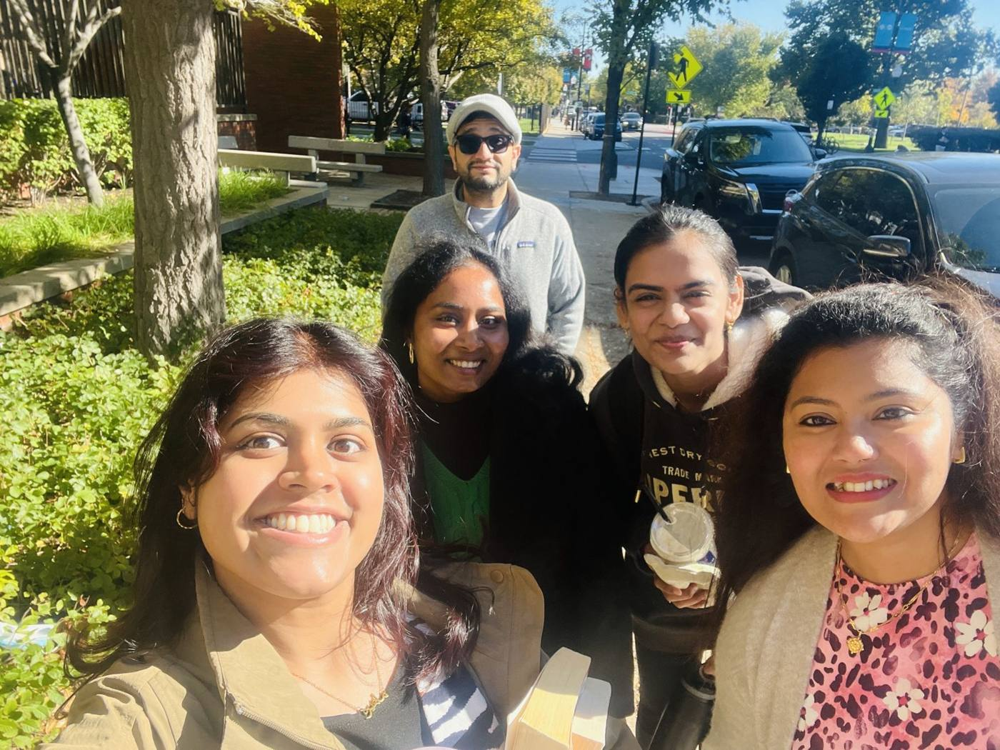
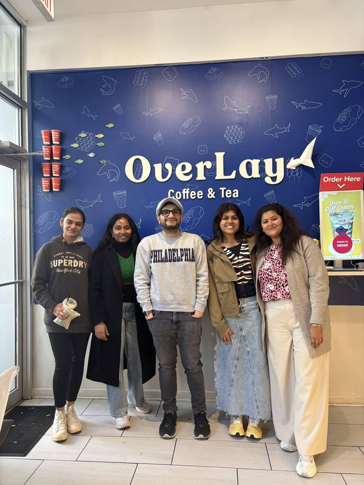
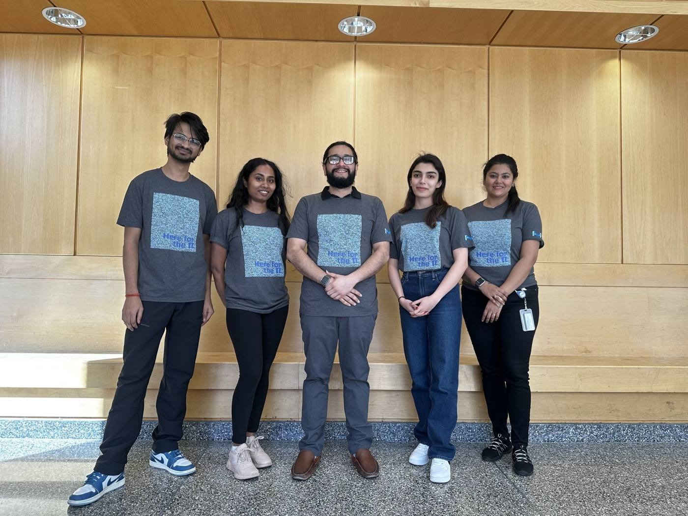
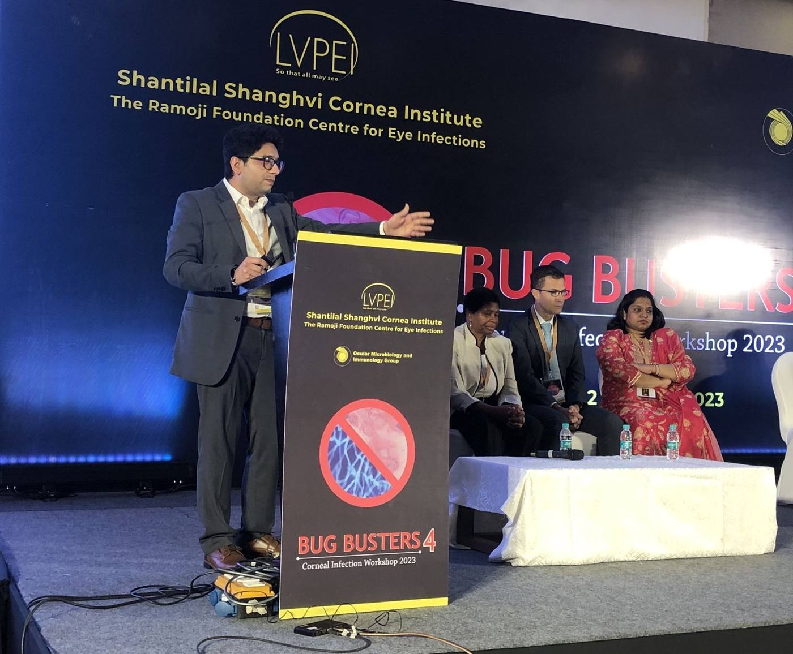